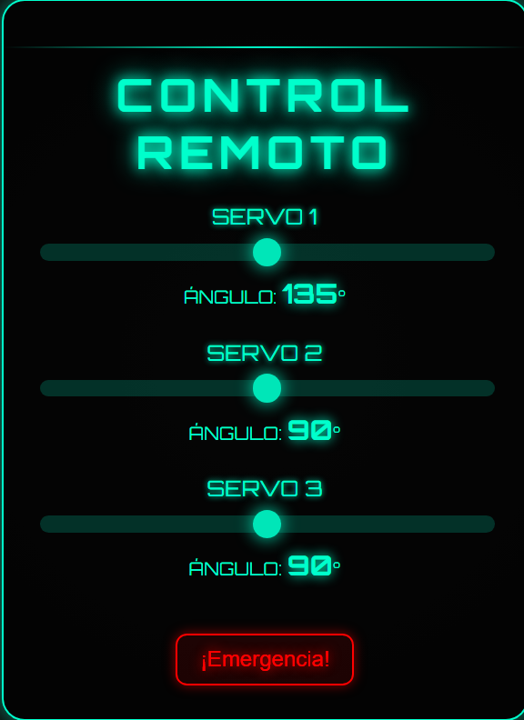

Cuando el usuario interactúa con los controles de la interfaz, los comandos se envían a la Raspberry, que los procesa y transmite las señales correspondientes a los servomotores.

Este sistema de control remoto permite una manipulación sencilla y eficiente del brazo robótico sin necesidad de conexiones físicas, facilitando su uso y ampliando sus aplicaciones.